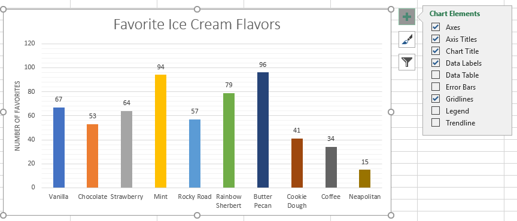
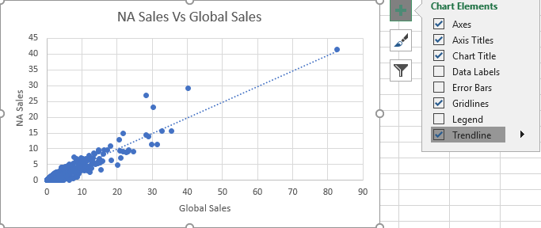
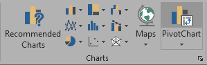
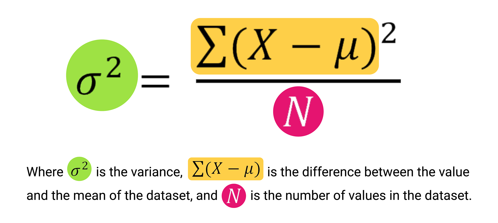

Objectives For Today
- Github
- Excel For Exploratory Data Analysis (EDA) Part 2
Introduction to Github
Github is a centralized repository where engineers can collaborate and deploy their code. Learning how to use Github is very important in our line of work, as there isn't a company that would not version-control work.
For now, we will only use the Graphical User Interface (GUI) for Github to submit homework.
Later in the course, we will learn how to use Git to work with Github through the terminal.
- Log in to your personal accounts.
- Create a README.md file.
- Markdown cheatsheet: https://github.com/adam-p/markdown-here/wiki/Markdown-Cheatsheet
- Create a public repo so that your graders can grade your work.
- Add a `.gitignore` file and look for "Python"
- It will ignore files that we do not want to track.
- This is important because our local machines create files randomly, and it is good practice not to pollute the repo with files or folders that are unnecessary for the work.
Basic Charting
Opening up ice_cream_faves.xlsx for demo. We have be dealing with tabular data, but today we will be doing visualizations.
How to access Excel charts?
I'm using Excel on a Mac, and so if you're using a PC, it may look different from yours.
Excel is more intuitive on PC than on Mac.
Mac Version
- On your Excel on the navigation tab, look for
Insert, and you should see charts right off the bat. - Using your mouse, highlight the table by selecting the cells.
- Click on the charts - Look for 2D columns
- The name of the chart is generic. Double-click on it, and change the title.
- Clicking on different parts of the chart will select the granularity you're looking for.
- Clicking on the bars itself, you can add trendlines and data labels.
- The idea is to play around with the chart to explore. Curiosity is your friend to learn.
- For Mac, when we add a chart, it will feature
Chart Designon the navigation bar. Under it on the left, there is aAdd Chart Element. - This is another way to format your chart.
- Click on
Change Colorsto change the colors of the chart. - If you click on the bars once (I'm using Mac Excel 2019, so yours might be different), you should be able to see the
Format Data Serieson the right to change how your bars look. - Click on the
Vary colors by point Vary colors by pointcan be missing if you select more than 1 column entry for your graph.
PC Version
- Create the chart by selecting the table and inserting a chart.
- There is a plus sign to the right of the chart. Click on it will bring up a list of elements and sub-elements which we can add or remove: 
- By clicking the paintbrush to the right of a chart, we have access options for
StyleandColor.
Filtering data within charts
Opening up basic_charts.xlsx for demo.
Go to the second spreadsheet called Ice Cream Sales. There might be a graph there, but it is not selecting all the data points within the table. We'll re-create and build a chart again.
Mac Steps
In general, apply filter on the table, and it should affect the graph directly.
To filter, look for the Data tab on the navigation bar, select the column headers, and click on Filter.
PC Steps
There should be a third option at the right of the chart. Clicking on that will allow you to filter the chart directly.
Students Do: The Line and Bar Grades
Scatter Plot
Very much used for clustering and classification for machine learning (ML).
Trendlines
PC Steps
Within the chart elements, click on the plus symbol to the right of your selected chart, and it should be there:
To change the type of trend line, double-click on a chart's trend line, and then select an available option:

Mac Steps
- Within the
Add Chart Elementearlier under theChart Designon the nav bar, there is an option to select the trend line. - Within the
Add Chart Element, there are options to choose other trendlines. The purpose is to get the best fit of the line. - To reverse the axis, choose
Select Data/Switch Row/Columnon the nav bar and you should be able to reverse the x and y axis with the option.
Students Do: St. Louis, MO Home Sales
Your turn to try an activity. We will review afterwards.
The Need to Filter
Let's open up walrus_group.xlsx. This is real data from the US Geological Survey studying walruses hauled out on ice floes in Alaska.
2 ways to filter tables
- Using the
Sort & Filter functionin Excel. - Using Pivot Tables.
If you want to represent a visualization directly through filters, we can also use a Pivot Chart.
PC Steps
Works exactly like Pivot Tables by selecting the data table, go into "Charts" group of the "Insert" tab, and select "Pivot Chart" from the options:
Mac steps
- NOTE: There is an issue with some versions of Excel 2016 for Mac. Updating to the latest version will solve it.
- If your Excel on Mac is new, there should be a
Pivot Chartunder theInserttab. - If your Excel is lacking the
Pivot Chartfunctionality, build a Pivot table and then insert a chart. It should work the same.
Students Do: Filter Home Sales
Open up the home_sales_filtered.xlsx and we want to start answering the questions to the activity.
Break - 15 mins @ 8:10pm
Variance, Standard Deviation, and Z-Score
We are going to focus on statistics for the remainder of the class.
This may be new to you, and don't worry if you don't get it the first round. We will be revisiting these statistical topics throughout the curriculum.
This video is going to help you in understanding what is variance and standard deviation:
Variance equation:
- Manually calculating the variance is not critical for this course. We just want to know the concept of what it means.
Why is variance and standard deviation important?
Using Variance-SD-Zscore.xlsx to illustrate why variance and standard deviation matter in a data set.
STDEV.Pfunction calculates the standard deviation of a dataset if the dataset is considered to be from a population.STDEV.Sfunction calculates the standard deviation of a dataset if the dataset is considered to be from a sample.
Z score
This is the number of standard deviation from the mean for a particular data point.
This video is going to help you understand what is z-score:
Why is the z-score important?

How to calculate z-score?
For each value, x: (x - µ)/ σ where:
- (x - µ) is the distance of the data point to the population mean
- Dividing by σ gives its relativity to the standard deviation.
Students Do: Variance, Standard Deviation, and Z-Score Review
Open up variance_review.xlsx to review these summary statistics.
Quantiles, Outliers, and Box Plots
We will be looking at quantiles_outliers_boxplots.xlsx for additional statistics.
One of the biggest challenges in statistics is that real-world data is impact. Oftentimes, real-world data contain extreme values that can skew our interpretations, especially when we try to describe the center of a dataset.
To improve our story and truth telling of a dataset, we break up a dataset into smaller segments:
- Quantiles
- In Excel, we use
QUARTILE.EXC. To know how to use this function, read: https://support.microsoft.com/en-us/office/quartile-exc-function-5a355b7a-840b-4a01-b0f1-f538c2864cad - Interquartile range (IQR) is calculated by subtracting Q1 from Q3.
- Percentiles
Outliers
Extreme values of a data set.
The box and whisker plot helps us to identify the outliers.
- Most common quantitative method to identify potential outliers:
1.5 * IQR - The
1.5 * IQRrule states that any data point that is 1.5 times the IQR range lower than Q1 could be a potential outlier. - Alternatively, any data point that is 1.5 times the interquartile range higher than Q3 could be a potential outlier.
- Box plots help to provide a number of summary statistics at a glance.
- Sometimes, an
Xor triangle in the middle of the box signifies the mean of the dataset.
Students Do: Cereal Outliers
Let's try out the outliers_activity.xlsx for today.